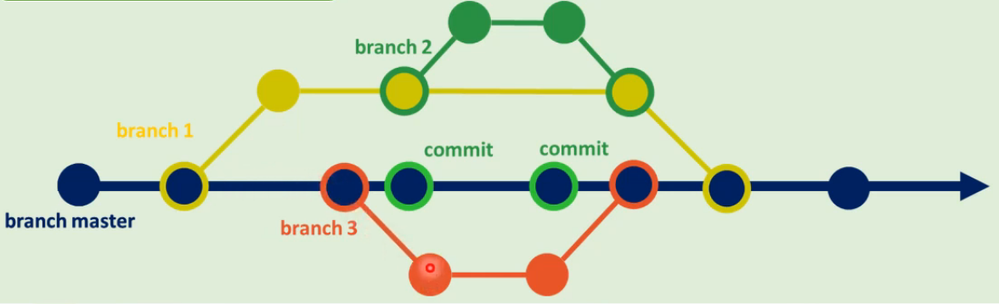

Aula 12 - Branches e Hospedagem
Branches
São ramificações de um projeto de software ou documento e tem como objetivo o desenvolvimento paralelo de:
- novas funcionalidades;
- correção de problemas;
- alteração de código.
- Branche Master ou Main
- braço principal de um projeto em um repositório
- Branch Secundária
- braço secundário de um projeto em um repositório
